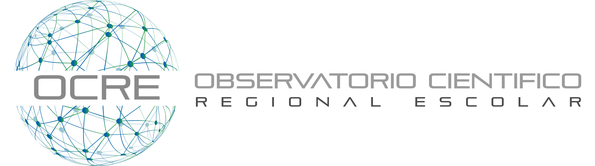

Los problemas sociales y ambientales están causando impactos negativos nunca antes vistos. En la década de los 80 se vio la necesidad de armonizar el crecimiento económico, el bienestar social y la protección del medio ambiente. Lo que desde el 2015 promueven las Naciones Unidas a través de los Objetivos de Desarrollo Sostenibles (ODS). Hoy los desastres naturales por el cambio climático, la preocupación por las altas tasas de contaminación que vulneran la integridad de la biosfera, el problema de la gestión sostenible de los recursos naturales que han producido el cambio del sistema terrestre y los flujos bioquímicos alterados son fenómenos emergentes del sistema eco social diseñado.
En este contexto la sociedad requiere de acciones preventivas basadas en el entendimiento para enfrentar futuros eventos, debido al ejercicio de los agentes internos y externos que contribuyen a la compleja relación conservación-desarrollo, que puedan poner en riesgo la vida, la salud, y el equilibrio del medio, lo que se conoce como Gestión de Riesgos (Campos Vargas, Aparicio, & Alanis, 2015). El método y la infraestructura científica juega un rol principal en descubrimiento de las relaciones desencadenantes de los eventos de riesgo para dar alerta sobre los desafíos futuros. Esto requiere investigación de los complejos y evolutivos vínculos entre los ecosistemas y la sociedad para su comprensión y formulación de soluciones mitigantes diseñadas con enfoques integrados (Fischer et al., 2015).
La educación es el instrumento necesario para preparar a los ciudadanos, de modo que estos logren ser agentes activos y puedan integrarse en la sociedad para el bien común. Hoy la sociedad requiere la transferencia de habilidades de la ciencia y el desarrollo del aprendizaje profundo, para contribuir a los aprendizajes postulados para el siglo xxi (conocer, hacer, a convivir, ser) («La educación encierra un tesoro», 2002).
La cooperación institucional universitaria y secundaria puede permitir el marco necesario para establecer ciudadanos activos con conocimiento de su ecosistema y comprometidos con aportar parte de la solución, paralelamente les permite crecer integralmente a la vez que mediante los nuevos mecanismos de interacción social donde comparten una experiencia autentica de aprendizaje en contextos reales. Esto desafía a los componentes colaborativos a enfrentar problemas comunes del medio a la vez que potencia el trabajo colaborativo, el pensamiento crítico, la comunicación y la responsabilidad social colocando el camino de trabajo conjunto y enfocado en la solución de problemas reales para el beneficio común. De esta forma las técnicas del método científico pueden ser extrapoladas y utilizadas por la ciudadanía.
Las experiencias en contextos educativos promueven la transferencia del conocimiento, metodologías, habilidades e infraestructura científica a las instituciones secundarias en una etapa temprana (Rivera, 2017) y demuestran en los procesos de enseñanza-aprendizaje de niños y niñas, lo que a su vez puede incidir en el aumento del interés de los jóvenes por la ciencia a nivel profesional, los beneficios en el desarrollo del pensamiento crítico y profundo. La educación en ciencias es vivencial; no puede estrictamente enseñarse, debe adquirirse con la vivencia.
Una forma de interesar a la comunidad estudiantil en los problemas científicos, es generando actividades prácticas que sean desarrolladas por los alumnos de colegios o liceos, con la supervisión y apoyo de sus profesores (profesores de enseñanza media), monitores (estudiantes de carreras técnicas de Universidades) y asesores científicos (docentes de Universidades). Esta iniciativa tiene al menos dos ventajas: por una parte, acerca al estudiante de enseñanza media al ámbito universitario y por otro lado, motiva a éstos últimos a que comiencen a transferir tempranamente su conocimiento a los alumnos de los liceos.
Es nuestra propuesta impulsar la colaboración entre investigadores universitarios, profesores de ciencias y estudiantes universitarios y de secundaria creando un marco de colaboración mediante de una red de monitoreo físico, que denominaremos Observatorio Científico Regional Escolar, por sus siglas OCRE, que sirva de medio para la enseñanza de las ciencias a través de datos reales disponibles a la comunidad, que cumpla con estándares open data y que permita la comprensión del método científico en la adquisición de datos científicos para la comprensión de fenómenos reales del medio cercano. Esto complementará los esfuerzos de establecimientos de enseñanza media en sus planes estratégicos institucionales (PEI) y planes de mejoramiento educativo (PME).
Si desea ver más detalles del proyecto revise el siguiente documento pdf